★★★★★
Yoko is an experienced cosmetic professional, I am thrilled with my classic eyelash extensions.
Joanne Stewart2 weeks ago
A design proposal for yokototalbeauty (not the official website)
Cosmetic tattoo, North Willoughby
Yoko Hamaguchi, a cosmetic tattoo artist from Tokyo, creates each shape to balance with your facial structure.
5.0Rated Excellent in Google reviews
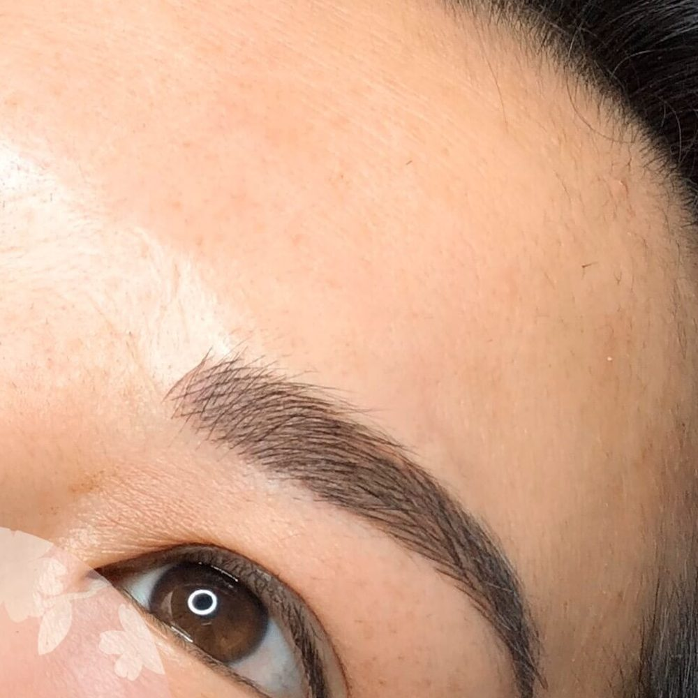
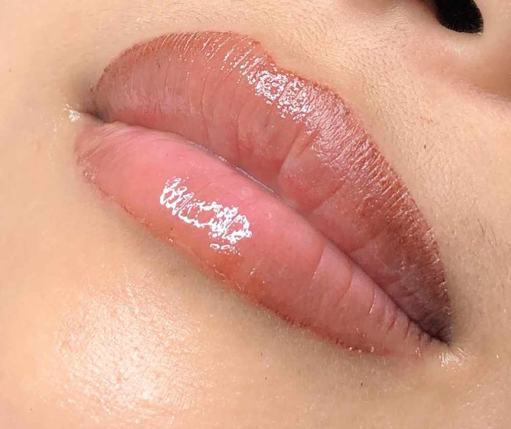
Brows and lips by Yoko, from the gallery
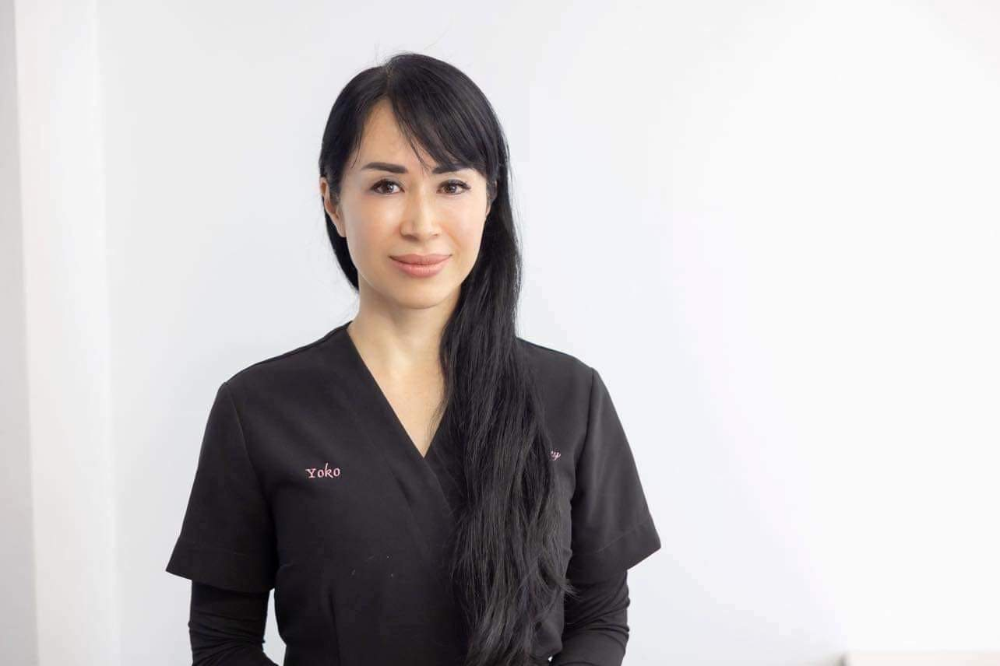
01Yoko Hamaguchi, founder
01 About Yoko
Cosmetic tattoo artist and trainer · Tokyo, Japan → Sydney
Welcome to Yokototalbeauty (YTB) your cosmetic tattoo and beauty clinic located in Sydney, NSW. Led by Master Tattooo artist Yoko Hamaguchi (Tokyo, Japan) who brings years of experience in both individualised treatments and training. YTB is a premier destination for cosmetic tattooing and holistic beauty services. Yoko and the team bring a rich tapestry of craftsmanship, tradition and innovation to every client experience.
At YTB, experience meets innovation, making us a prime choice for both bespoke treatments and professional tattoo artistry training.
私は東京で生まれ育ち、16年前にオーストラリアに移住してきた後は、13年間歯科助手として医療分野の世界におりました。子供たちが独立した後は、自分が情熱を持っている美容という分野に乗り出し、今に至ります。 長年携わってきた医療分野の仕事では、クリニックの環境に関する専門知識や衛生管理の重要性を学ぶことができ、当サロンを開業するにあたりこれらの知識はとても役立っております。さらに医療分野に勤めたことで、正確性や患者さまへの気遣いがいかに大切なことであるかを学ぶことができました。 私が持っている美への情熱、そして今までに培った知識をお客さまにシェアし、お客さまの美しさをさらに上のレベルへと高めていただくお手伝いをさせていただきたいと考えております。
02 About us
At yokototalbeauty, we believe that achieving beauty takes confident professionals who are creative and have advanced skills in formulation and application combined with more straightforward techniques to transform you into an endearing charm.
Yoko (Founder) has always been an aficionado of beauty and has positioned the Cosmetic Tattoo Clinic to be a one-stop shop for all Eyebrow Microblading/Powder Shading, Eyelash Extensions, Semi Permanent Eyeliner/Lip Blush and Scalp Micropigmentation. Being Japanese, which is the heart of the geisha phenomenon, Yoko has a gift for beauty and has mastered the art of cosmetic tattooing. With the expertise of Yoko, she will help you express your beauty and uniqueness to the admiration of the entire neighbourhood and your loved ones.
We have designed our cosmetic tattoo services to suit diverse customer needs, and we are dedicated to giving you a salon experience that is professional and engaging so you are more than satisfied from inception to the end. As a visionary cosmetic beauty service provider, we pay strict attention to details to understand how beautiful you want to look and we will help you achieve your heart’s desire.
Yoko has built a client-focused clinic, and we are poised to helping our clients through inspired creativity and skills to achieve their personal goals in beauty.
To Yoko, this isn’t a kind of work but fun, and she enjoys seeing her clients’ joyful expression when the project is complete.
Be our guest, relax in the cozy atmosphere of the clinic and enjoy our exclusive cosmetic beauty and hyaluronic services .
yokototalbeautyでは、美を実現するためには、創造性に溢れ、卓越したスキルを持つ、自信に満ちたプロフェッショナルのみが、確かな技術力で、お客さまをさらに魅力的に変えるお手伝いができると考えております。
私、Yoko (創始者) は常に美容に関心を持ち、アイラッシュ・エクステンション、アイブロウ・シェイビング/シェーディング、ジェルネイルといった全ての美容サービスを一か所で受けることができるビューティサロンを作りたいと考えていました。日本人としてのきめ細かいサービス、確かな技術力と美容の知識で、お客さまの美しさを最大限に引き出すお手伝いをさせていただきます。
お客さまの様々なご要望にお答えし、最初から最後までご満足いただけるプロフェッショナルで魅力的なサロン体験をご提供します。美を提供するサロンとして、細部にまでこだわり、お客さまの持つ美しさを理解し、ご希望を実現いたします。
私はお客さまのことを第一に考え、お客さまの理想の実現のために、私の持つ創造力と技術力でお役に立ちたいと考えています。
私にとってこの仕事は天職です。施術が終わった後のお客さまの喜んだ表情を見ることが幸せでもあります。
サロンのアットホームな雰囲気でリラックスしていただき、他にはないビューティーサービスをお楽しみください。
Why choose us
We will deliver all cosmetic tattoo services in adherence to ethical principles, honesty, and respect. With a strong code of ethic, we will abide by the rules and regulations guiding the profession.
We are committed to being there for our customers; we are approachable and responsive for all your beauty needs.
We will ‘do what we say’ because part of our goals is to build a long-term business relationship and a history of delighted customers.
yokototalbeauty will continuously train on innovative technologies in the skin penetration service delivery sector to build customer confidence.
Our vision at yokototalbeauty is to make a difference as an exceptional cosmetic tattoo service provider and to set the pace in offering services that are synonymous with quality to elevate the confidence of our clients. Additionally, we want to make positive decisions and deliver adaptable and vibrant cosmetic services, we aim to work with four cardinal core values.
yokototalbeauty’s mission is to lift the benchmark in the skin penetration industry and to provide a platform where creativity, talent, and beauty come together. We are in the industry to redefine beauty with trendy styles to be a conduit for self-confidence while enjoying the female art of delivering cosmetic beauty, in a soothing and relaxing atmosphere for our customers.
03 The team
We have 3 professionals to choose from.
Yoko (Founder) and her team have always been aficionados of beauty and positioned the beauty Clinic to be a one-stop shop for all Eyelash Extensions, Eyebrow Shaping/Shading, Semi Permanent Eyeliner, Lip Tinting, Plasma Fibroblast & SMP.
Being Japanese, which is the heart of the geisha phenomenon, the YTB team has a gift for beauty and have mastered the art of make-up. With the expertise of Yoko, Yuri & Hitomi, they will help you express your beauty and uniqueness to the admiration of the entire neighbourhood and your loved ones.
私、Yoko (創始者) は常に美容に関心を持ち、アイラッシュ・エクステンション、アイブロウ・シェイピング/シェーディング、ジェルネイルといった全ての美容サービスを一か所で受けることができるビューティサロンを作りたいと考えていました。日本人としてのきめ細かいサービス、確かな技術力と美容の知識で、お客さまの美しさを最大限に引き出すお手伝いをさせていただきます。
Yoko
Founder
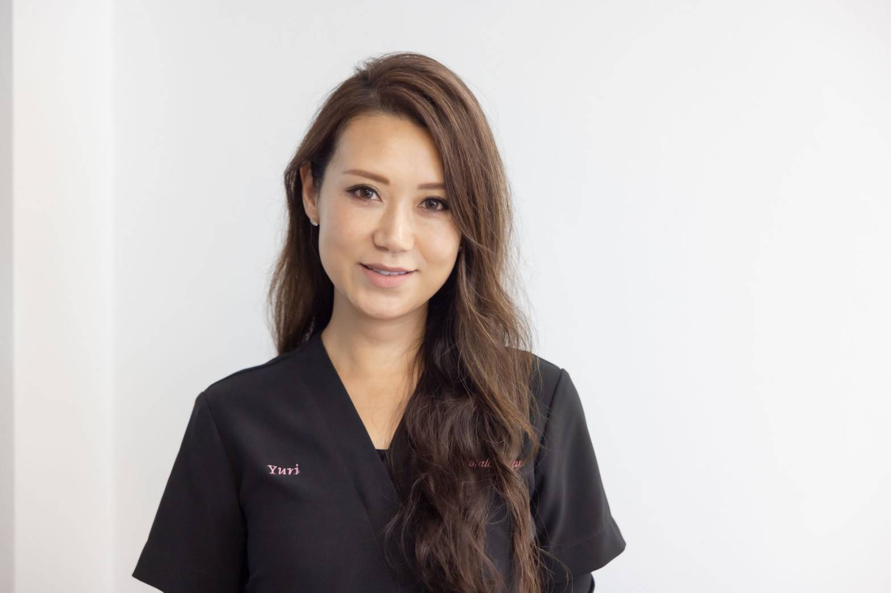
Yuri
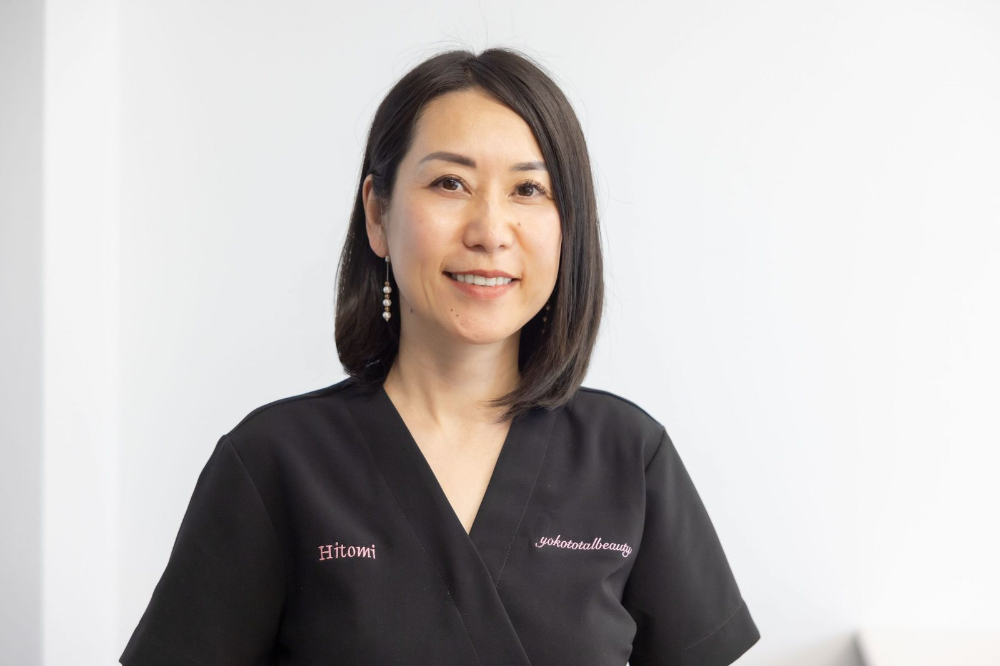
Hitomi
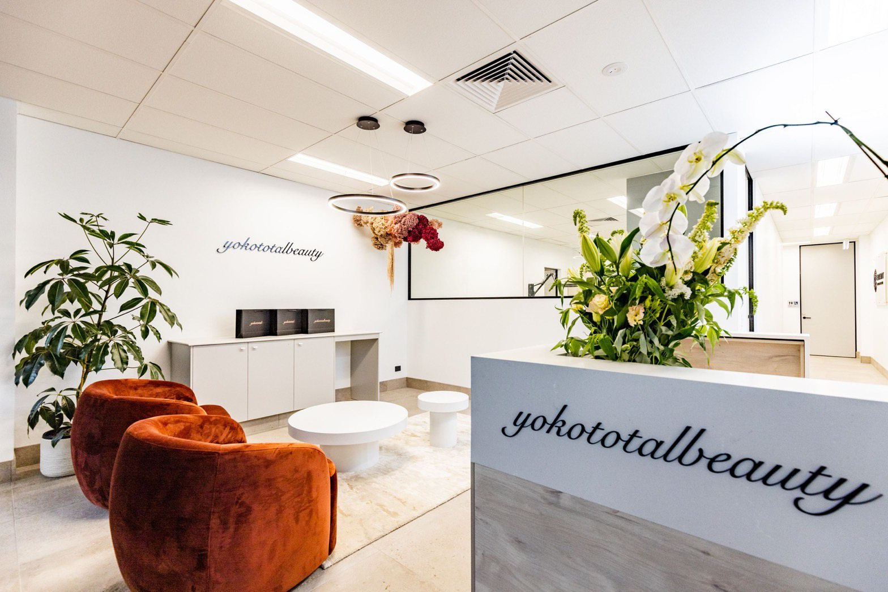
04 The clinic
Be our guest, relax in the cozy atmosphere of the clinic and enjoy our exclusive cosmetic beauty and hyaluronic services .
サロンのアットホームな雰囲気でリラックスしていただき、他にはないビューティーサービスをお楽しみください。
3/283 Penshurst St, North Willoughby NSW 2068
05 Google reviews
All 23 reviews shown on the current website, in the original English.
★★★★★
Yoko is an experienced cosmetic professional, I am thrilled with my classic eyelash extensions.
Joanne Stewart2 weeks ago
★★★★★
Yoko is a professional in her craft and very warm and welcoming, making you feel at ease throughout the process .i am a very happy customer 😍and will be spreading the word 🫶 thank you Yoko💐
Ira Norris3 weeks ago
★★★★★
I had my brows done - it was a world apart from my last two tattoo artists. The nano brows look realistic, don't peel off and look slightly bonkers for a couple of weeks, and Yoko lifted the ends to make me look a little younger ;)
Loved it!
Da monkey girl!3 weeks ago
★★★★★
I’m very happy with the results of my eyeliners tattoo with Yoko! She is incredibly talented, trustworthy, confident, and professional. I felt very comfortable and confident in her hands throughout the whole process.
I previously had microblading done by Yoko as well, and the results exceeded my expectations. Her attention to detail and skill are truly impressive.
I would highly recommend Yoko to anyone looking for any of the services on her menu. She is professional, caring, and genuinely passionate about what she does. Thank you, Yoko, for the amazing results! ❤️
Huschi Peronni3 weeks ago
★★★★★
Highly recommend! A wonderful Beautition who combines high quality treatments with a gentle, calming approach. Always leaves me feeling well cared for.
Sheridan Buchanan1 month ago
★★★★★
I have been visiting Yoko for a few years now, and she is always polite, professional, and very skilled. I’m always happy with her treatments and feel very comfortable in her care. I’m looking forward to exploring more of her different treatments in the future!
Yu T2 months ago
★★★★★
I am so glad to have found Yoko and could not be happier with results. Her studio is beautiful and has a lot of offerings. Would highly recommend Yoko studio.
Christine L2 months ago
★★★★★
Yoko is the best! 😁 I have my brows touched up yearly and I always look forward to it. Her salon is clean, warm and inviting. She has a friendly, kind nature with a personal touch! I recommended her to my sisters-in-law only to discover they go to her as well! 🤭 So, obviously, she comes Highly recommended! 🌼
Leeanne Tse3 months ago
Thank you so much, Leeanne. It’s always lovely to see you for your yearly brow touch-up, and I truly appreciate your continued trust. I’m so glad you feel comfortable and welcome in the salon. Finding out your sisters-in-law already come to me as well made me smile! Thank you for your beautiful recommendation. 🌼
★★★★★
I’m impressed with the LED cat eye look eyelash . Yoko is very skilled and did a fantastic job. Highly recommended!
Grace Mok3 months ago
Thank you so much, Grace. I’m delighted you love your LED cat eye lashes. It was a pleasure creating this look for you, and I really appreciate your kind words and recommendation.
★★★★★
I had nano brows and a lash lift done by Yoko!
She designed my brows based on the golden ratio that suited my facial structure perfectly, and I absolutely love the result.
During the cosmetic tattoo procedure, she kept checking if I was in pain and applied numbing cream whenever needed, so I was able to feel comfortable and relaxed throughout the treatment.
The clinic was also very clean and beautiful, and everything about the experience was amazing.
I can’t stop admiring my lashes and brows now, and I’m excited to see how they settle in over time 💞
I would definitely love to come back again.
Thank you so much!!
先日はようこさんに眉毛のナノブロウとラッシュリフトを施術していただきました！
眉毛は自分の骨格に合わせた黄金比でとても綺麗にデザインしてくださり、大満足です。
アートメイク中も何度も痛みがないか確認してくださって、必要な時には麻酔も追加してくれたので、安心して快適に施術を受けることができました。
クリニックもとても清潔感があり、居心地の良い空間で、最初から最後まで素晴らしい対応でした。
今は自分のまつ毛と眉毛を見るたびに気分が上がっています！これからさらに馴染んでいくのが楽しみです💞
またぜひ利用したいと思っています。
本当にありがとうございました！！
Erika Yamao (ErikaYamao)5 months ago
Thank you so much, Erika. I’m truly happy to hear how pleased you are with your Nano Brows and lash lift. Designing brows to suit each individual facial structure and balance is such an important part of the process, so I’m very glad the shape felt natural and beautifully suited to you. Comfort during the procedure is also something I care deeply about, and I’m pleased you felt relaxed and reassured throughout your appointment. Thank you as well for your kind words about the studio environment. It means a great deal that you noticed the care and cleanliness of the space. I’m excited for you to see the brows continue to soften and settle beautifully over the coming weeks. I truly appreciate your trust and look forward to welcoming you again in the future. 💞
★★★★★
Lash extensions were quick and easy. Yoko's service is discreet and her products are of the highest quality. I have had so many positive comments.
Elly5 months ago
Thank you, Elly. I’m so glad your lash extensions felt quick and easy, and that you’ve received such lovely comments. I truly appreciate your trust and kind words.
★★★★★
Yoko is efficient, reliable, and outstanding at what she does. I strongly recommend her!
Maki Robinson5 months ago
Thank you, Maki. I’m grateful for your thoughtful review. Efficiency, reliability, and careful results are very important to me, and I truly appreciate your recommendation.
★★★★★
I had a nano brow combination by Yoko and I am really pleased with my new brows. Yoko is highly skilled and I was very happy with the entire process. Highly recommended. Thank you Yoko!
Dina Chungue7 months ago
Thank you, Dina. I’m so pleased you’re happy with your Nano Brow combination and the overall process. Your recommendation means a great deal.
★★★★★
I have done my hairline and I love it !! She is a professional and knows what she is doing ! I highly recommend her !
Virginia7 months ago
Thank you, Virginia. I’m so happy you love your hairline result. Scalp and hairline work require careful detail, and I’m grateful for your trust and recommendation.
★★★★★
It was my first time getting a lash lift and an eyeliner tattoo. Yoko-san was so gentle and professional, I am so happy with the results that I am definitely going to be back for more!
Angela Pui On Siu8 months ago
Thank you, Angela. I’m so pleased your first lash lift and eyeliner tattoo experience felt gentle and professional. I’m delighted you’re happy with the results and look forward to welcoming you back.
★★★★★
I have been coming to Yoko to have my eyelash extensions done for about one year now, and could not recommend her highly enough. She is incredibly professional but also very kind and thoughtful. My favourite beautician in Sydney. Thanks!
Deejay Jee8 months ago
Thank you so much, Deejay. Your support over the past year truly means a great deal to me. I’m very grateful for your kind words and for trusting me as your beautician in Sydney.
★★★★★
Had an amazing experience getting eyelash extensions with Yoko! Her skills are top-notch and the whole process was super relaxing and my eyelashes look stunning 😊 Highly recommend!
Sharon Batu8 months ago
★★★★★
I had a Nano Brow Combination treatment with Yoko, and the experience was excellent. She is very professional and took the time to provide detailed information throughout the process, which made me feel completely comfortable and confident. The results look great, and I highly recommend her services.
Toshi8 months ago
Thank you very much, Toshi. I’m so pleased you felt comfortable and well-informed throughout your Nano Brow Combination treatment. I’m delighted you’re happy with the results and truly appreciate your recommendation.
★★★★★
I had a nanobrow done and Yoko was an absolute professional. Her craft is like artwork and she does it in the gentlest way possible. All at the same time she makes you relax by talking softly. I could not sing her praises higher. Totally recommend if you want this done right, she's the person.
Yee Cheng9 months ago
Thank you so much, Yee. I truly appreciate your thoughtful words. Nano Brows require a delicate hand and careful attention to detail, so it means a great deal that you felt both the artistry and the gentleness of the process. I’m very grateful for your recommendation and your trust
★★★★★
Efficient and Fabulous! I had my first experience of eyelash extensions today and it was a great experience. Yoko's salon is immaculate and welcoming, the procedure was comfortable and quick. I've adjusted to my lashes quickly and they look fab - glamorous and natural.
Highly recommended!
Melanie Gale9 months ago
Thank you, Melanie. I’m so pleased your first experience with eyelash extensions felt comfortable and seamless. I’m glad you’ve adjusted quickly and are enjoying the balance of glamour and natural softness. Your recommendation truly means a great deal.
★★★★★
Yoko is an artist. Her work is so careful and precise. I am so happy with my nano-brow results.
Elizabeth Hastings9 months ago
Your words truly mean so much. Nano Brows require patience, balance, and precision, so I’m very grateful that you see the artistry in the work. I’m so pleased you’re happy with your results and appreciate your trust in me.
★★★★★
Yoko is the absolute best. I’ve been going to her for 6 years for permanent eyeliner, facials and microblading. She is a true artist. I’ve sent many friends and family to her who also thinks she’s excellent. The BEST ❤️
Esra H9 months ago
Thank you, Esra. Six years of trust truly means so much to me. It has been a privilege to care for your eyeliner, brows, and skin over time. Your continued support, and the referrals of your friends and family, are something I never take lightly. I’m deeply grateful for your loyalty and kind words.
★★★★★
Yoko is amazing!!! 💕💕 I highly recommend her🫶🏻 💯
Teeth whitening ✅
Scalp pigmentation ✅
Jan Prudente10 months ago
Thank you so much, Jan. I truly appreciate your enthusiasm and trust. It’s always a pleasure caring for you — whether for teeth whitening or scalp pigmentation, each treatment is approached with precision and attention to detail. Your recommendation means a great deal to me. 💕
06 Shop, gift cards & rewards
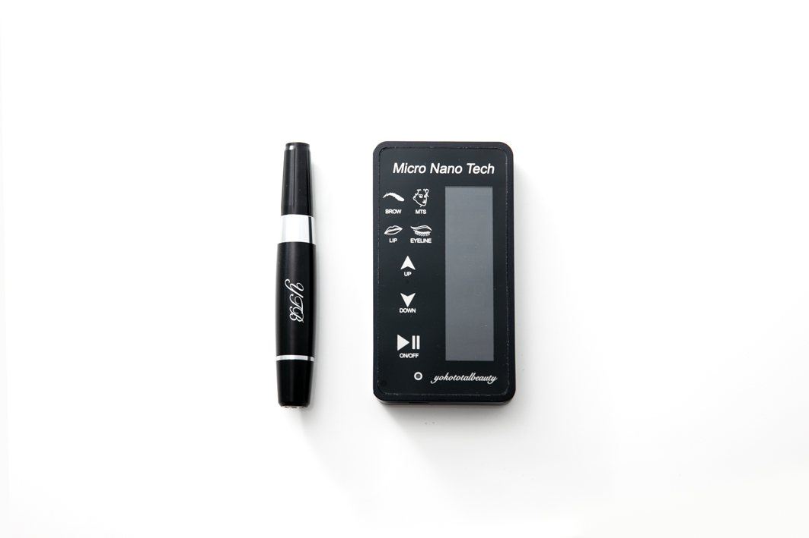
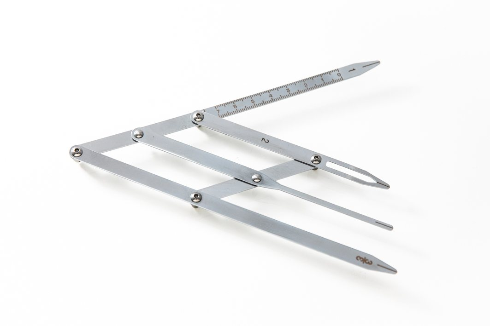
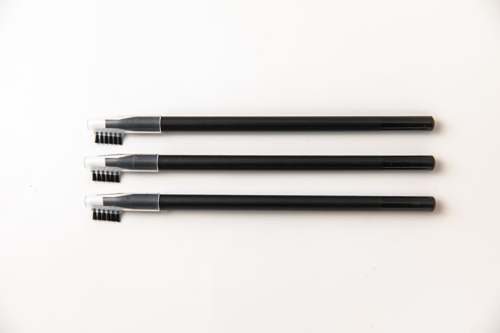
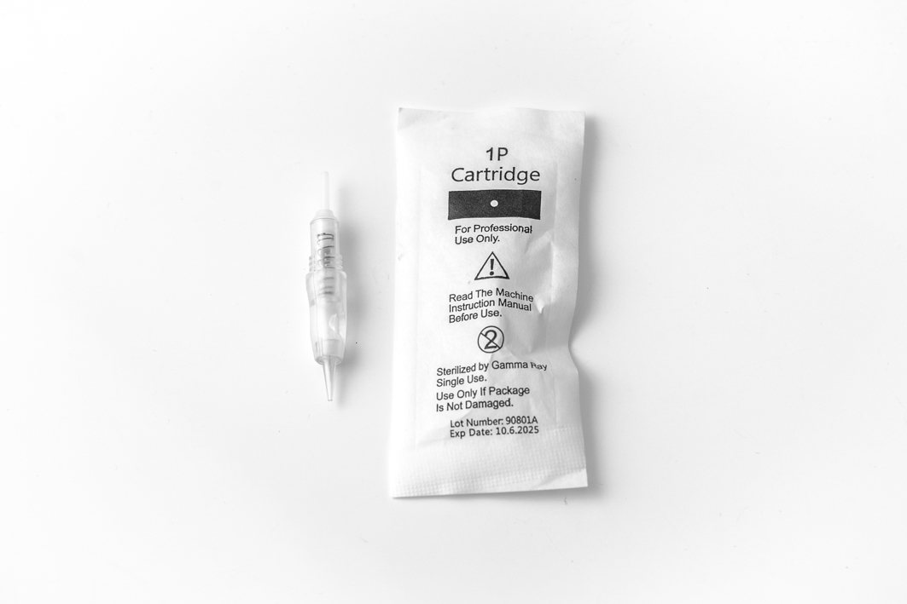
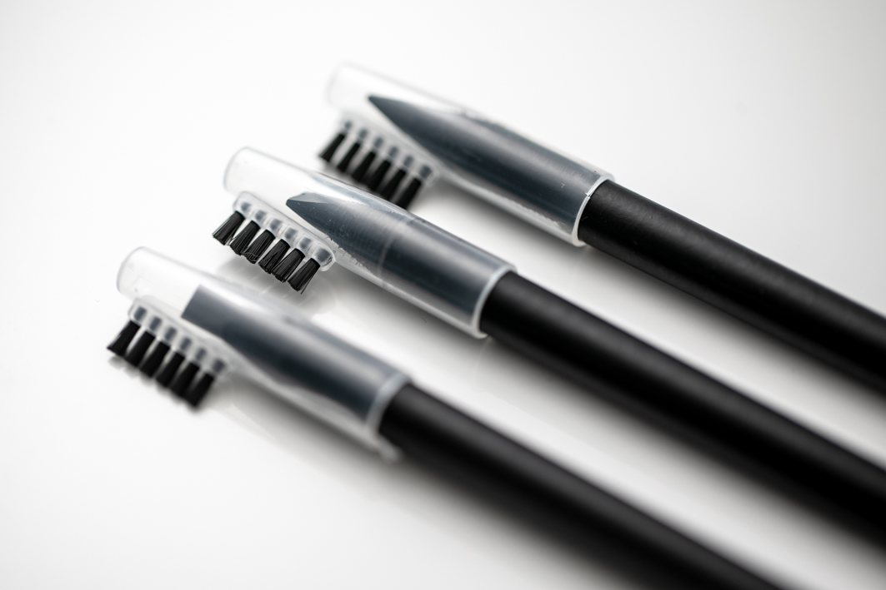
Unleash the joy of giving with YTB’s exquisite Gift Cards – the perfect present for every occasion. Our elegantly designed gift cards not only bestow the gift of confidence but also unlock a world of VIP benefits through our loyalty program.
Earn loyalty points for every dollar you spend on treatments and products at yokototalbeauty. Your loyalty points never expire. Track and redeem them in the yokototalbeauty app.
Afterpay and Payright are available. Turn one big payment into easy bite-size instalments.
Revive7 Revitalising Lash & Brow Serum. Orders are usually dispatched within 1–2 working days. Call, text or email to order.
07 Booking
The booking screen below is your current Phorest booking page. Appointments, reminders, TreatCard points and the app all work as they do today.
Loading the booking screen…
08 Every page
41 pages.
Visit